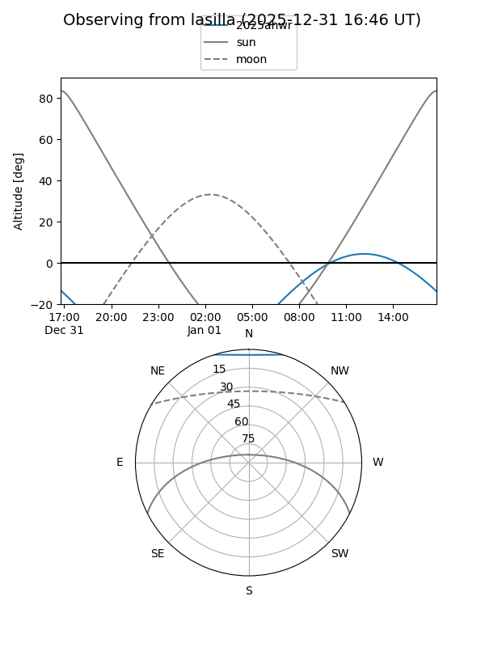
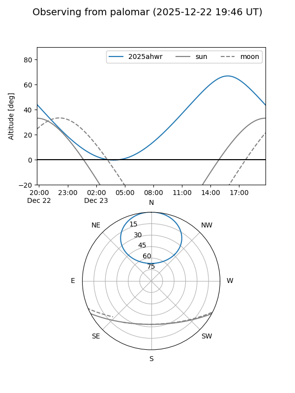

2025ahwr
Target 2025ahwr at 2025-12-23 12:28
Aliases and brokers:
FINK: fink-portal.org/ZTF25ackalhz
Lasair: lasair-ztf.lsst.ac.uk/objects/ZTF25ackalhz
ALeRCE: alerce.online/object/ZTF25ackalhz
TNS: wis-tns.org/object/2025ahwr
YSE: ziggy.ucolick.org/yse/transient_detail/2025ahwr
alt names
ZTF25ackalhz (ztf,fink_ztf)
2025ahwr (tns,yse)
Coordinates:
equatorial (ra, dec) = 212.3768,+56.47963
equatorial (HMS+DMS) = 14:09:30.43,+56:28:46.67
galactic (l, b) = (102.8492,+57.49983)
Flags:
Photometry:
last ztfg=20.00, ztfr=19.93
1 ztfg, 1 ztfr detections
Lightcurve

Visibility


Additional plots